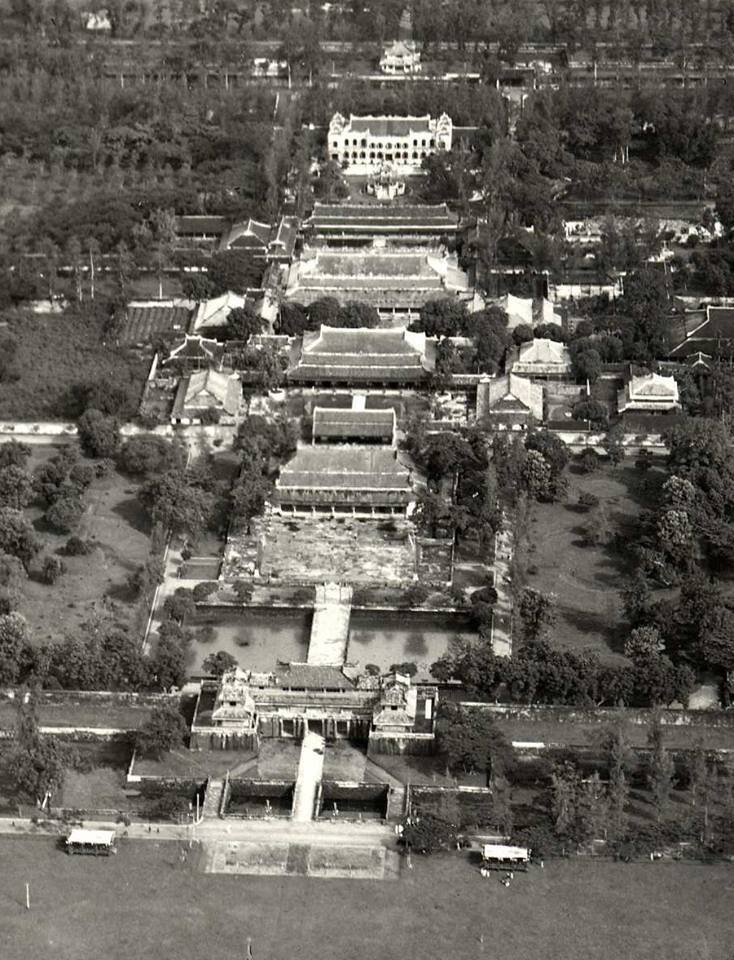

古代・建国の時代
ベトナムの歴史は4000年以上前、フン王による文郎国の建国から始まりました。この時代は、ベトナム人のアイデンティティが形成された重要な時期です。青銅器文化である東山（ドンソン）文化が栄え、有名な「銅鼓」はこの時代の象徴です。農業技術や伝統的な風習の基礎が築かれ、数々の伝説とともに現代まで受け継がれています。


時を超えた魅力、心温まる出会い

牛骨から取った深い味わいのスープ。ハーブの香りが引き立つ、ベトナムを代表する逸品です

自然と人間が織りなす絶景。秋になると山々が黄金色に輝き、息をのむ美しさです


ベトナムは単なる目的地ではなく、忘れられない体験そのものです。北部の壮大な山々から南部の真っ白な砂浜まで、それぞれの土地が独自の物語を語っています。
フォーからバインミーまで、本場のストリートフードはあなたを虜にします。

親切な地元の人々が、いつも輝く笑顔であなたを迎え入れます。
質の高い旅行体験を、非常にリーズナブルな価格で楽しむことができます。
ベトナムの歴史は4000年以上前、フン王による文郎国の建国から始まりました。この時代は、ベトナム人のアイデンティティが形成された重要な時期です。青銅器文化である東山（ドンソン）文化が栄え、有名な「銅鼓」はこの時代の象徴です。農業技術や伝統的な風習の基礎が築かれ、数々の伝説とともに現代まで受け継がれています。

10世紀、長年にわたる北方の支配を脱し、ベトナムは独立を勝ち取りました。李朝、陳朝、黎朝などの歴代王朝は、独自の文化を発展させ、国の領土を拡大しました。首都ハノイの「文廟」はこの時代の学問の象徴です。仏教や儒教の影響を受けつつ、建築、文学、芸術の分野でベトナム独自の洗練された美学が完成された時代と言えます。
19世紀後半からの植民地時代を経て、ベトナムは激動の20世紀を歩みました。不屈の精神で数々の困難を乗り越え、1945年の独立宣言を経て、ついに真の平和と統一を手にしました。この時代の苦難と勇気は、今のベトナム人の強さと団結力の源となっています。多くの歴史的記念碑や博物館が、平和の大切さを今に伝えています。
1986年のドイモイ（刷新）政策以降、ベトナムは急速な経済発展を遂げ、東南アジアで最もダイナミックな国の一つとなりました。古い街並みと近代的な摩天楼が共存する姿は、伝統を大切にしながらも未来へ突き進むベトナムの姿を象徴しています。現在、ベトナムは文化的な魅力を保ちつつ、国際社会の重要な一員として輝かしい未来を描いています。